Japan / Miyagi / Higashimatsushima
Higashimatsushima
Higashimatsushima · Miyagi
Higashimatsushima
Highlighted on the Miyagi map.
Stay
フォーシーズン矢本
Fooshiizun Yamoto
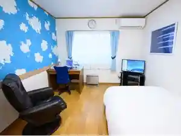
バリュー・ザ・ホテル東松島 矢本
バリュー・ザ・ホテル東松島 矢本
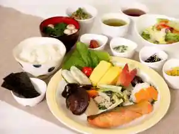
SENSE’S
SENSES
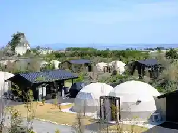
ＫＩＢＯＴＣＨＡ
KIBOTCHA
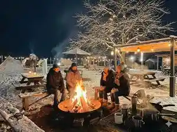
奥松島レーンホテル
Oku Matsushima Reenhoteru
RISE BEACH
RISE BEACH
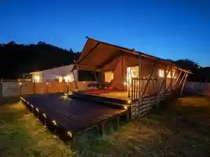
民宿かみの家
Minshuku Kamino Ie
漁師民宿桜荘
Ryoushi Minshuku Sakura Sou
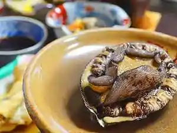
Dining
支那そばや
Shina Sobaya
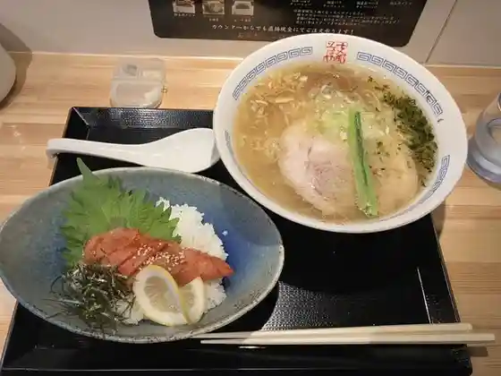
ピーコック
Piikokku
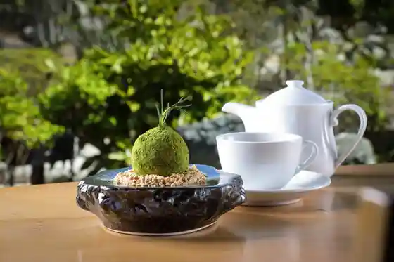
KOBACHI Cafe 奥松庵
KOBACHI Cafe
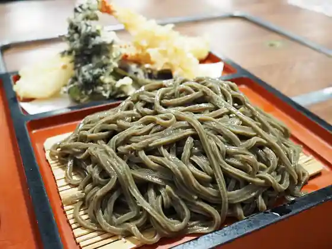
ちゃんこ 萩乃井
Chanko Hagi No I
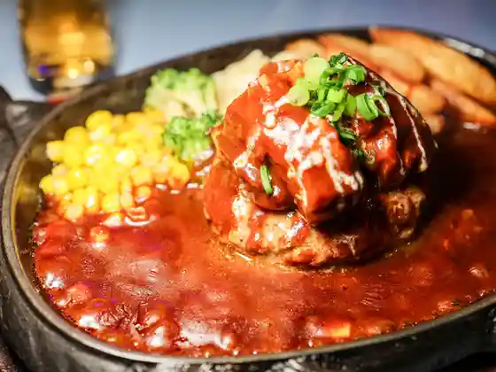
レストランぱらだいす
Resutoran Paradaisu
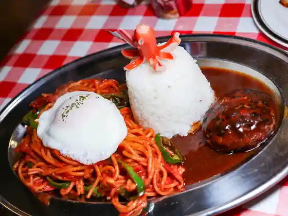
ぐ～はっち
Gu ~ Hatchi
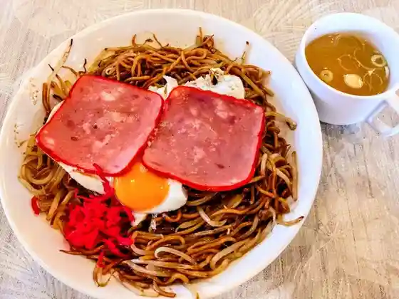
三浦屋
Miura Ya
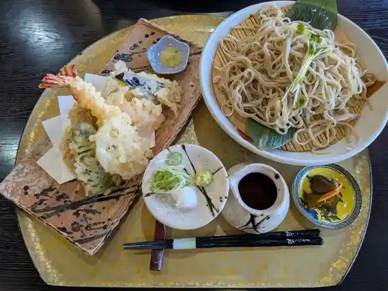
農家手打ちそば きさく苑
Nouka Teuchi Chisoba Kisaku En
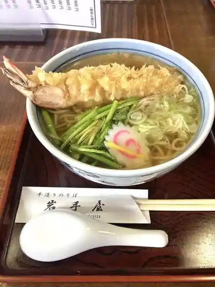
岩手屋
Iwate Ya
えんまん亭
Enman Tei
道の駅東松島
Michi No Eki Higashi Matsushima
台湾料理 福興閣
Taiwan Ryouri Fukkou Kaku
のびるノ茶屋
Nobiru No Chaya
ハンバーグレストラン つきみち 東松島店
Hanbaaguresutoran Tsukimichi Higashi Matsushima Mise
れすとらん メナージュ
Resutoran Menaaju
ZUNDA ZUNDA STATION
ZUNDA ZUNDA STATION
らーめん幸蔵
Raamen Kouzou
らーめん浜八道
Raamen Hama Hachidou
ドライブイン笠松
Doraibuin Kasamatsu
Ｈ&Ｈ Labo
H&H Labo
いろどりの丘
Irodorino Oka
ディ タフ
Di Tafu
大高森観光ホテル
Oodaka Mori Kankou Hotel
旨い食処 あごら
Umai Shoku Tokoro Agora
Highway Kitchen 颯
Highway Kitchen
ファミリーハウス みちのく
Famiriihausu Michinoku
龍鵬
Ryuu Ootori
カリフォルニア食堂 2号店
Kariforunia Shokudo 2 Gou Mise
あさひ食堂
Asahi Shokudo
107kitchen紗乃音
107kitchen
TARO BAKERY
TARO BAKERY
ル・ニ・リロンデール
ル・ニ・リロンデール
ジュリアン
Jurian
バリュー・ザ・ホテル 東松島矢本
バリュー・ザ・ホテル 東松島矢本
こばると
Kobaruto
花邑
Hana Mura
ラーメンショップ 矢本店
Raamenshoppu Yamoto Mise
王水 矢本店
Ousui Yamoto Mise
らーめん 楓
Raamen Momiji
中華そば カヤノヤ
Chuuka Soba Kayanoya
奥松島 LANE HOTEL
LANE HOTEL
パン工房 コナリナ
Pan Koubou Konarina
珈琲工房いしかわ 道の駅東松島
Koohii Koubou Ishikawa Michi No Eki Higashi Matsushima
ノビコ バウム工房
Nobiko Baumu Koubou
BERG BAKE
BERG BAKE
大勇堂
Taiyuu Dou
奥松島公社 焼がき施設
Oku Matsushima Kousha Yaki Gaki Shisetsu
ジャズ喫茶 アビーロード
Jazu Kissa Abiiroodo
民宿いすず
Minshuku Isuzu
漁師の宿 桜荘
Ryoushi No Yado Sakura Sou
青い町のぷらっとホーム
Aoi Machi Nopuratto Hoomu
みかさや食堂
Mikasaya Shokudo
ぱぱいやぱんや
Papaiyapanya
サンショップ 矢本店
Sanshoppu Yamoto Mise
遊旬
Yuu Jun
酒菜や凛
Shusai Ya Rin
そば処東京玉川屋
Soba Tokoro Toukyou Tamagawa Ya
パンジー
Panjii
ハラッパ
Harappa
セルコホーム あおみな
Serukohoomu Aomina
米粉のおやつ 366
Beifun Nooyatsu 366
ビジネスホテル フォーシーズン矢本
Bijinesuhoteru Fooshiizun Yamoto
かみの家
Kamino Ie
ちどり館
Chidori Kan
紅龍
Kouryuu
料理菅原
Ryouri Sugawara
げんちゃんハウス
Genchan Hausu
アートカフェShu
Aatokafe Shu
奥松島あんてなしょっぷ まちんど
Oku Matsushima Antenashoppu Machindo
なかみちや
Nakamichiya
焼きとり かっちゃん
Yaki Tori Katchan
渚園
Nagisa Sono
oimoya Jack
oimoya Jack
八千代寿司
Yachiyo Sushi
軽食レストラン カフェ マンマ
Keishoku Resutoran Kafe Manma
喫茶去 HaMa
HaMa
ホルモン 元
Horumon Moto
ジョイフル 石巻インター店
Joifuru Ishinomaki Intaa Mise
かっぱ寿司 石巻店
Kappa Sushi Ishinomaki Mise
スマイルダイニング
Sumairudainingu
安べえ食堂
An Bee Shokudo
イートハウス
Iitohausu
佐利 東松島工場 直営店
Sa Ri Higashi Matsushima Koujou Chokueiten
吹き寄せ寿司
Fuki Yose Sushi
やな川
Yana Kawa
やもと四季彩館 大塩店
Yamoto Shiki Sai Kan Ooshio Mise
古川屋
Furukawa Ya
おちゃや
Ochaya
コイノニアカフェ
Koinoniakafe
およげたいやきくん
Oyogetaiyakikun
福寿司
Fukuju Tsukasa
和食道しん
Washoku Michi Shin
大江酒店
Ooe Saketen
らんてい
Rantei
ナイスピクニックデイ
Naisupikunikkudei
cafe un gateau
cafe un gateau
のり工房 矢本
Nori Koubou Yamoto
AKAMA
AKAMA
自家焙煎珈琲 JoyCoffee
JoyCoffee
石垣商店
Ishigaki Shouten
ビアベースカンパネラ
Biabeesukanpanera
和･洋菓子 おおむら
Wa Wa Yougashi Oomura
OMOUMA麺堂 石巻店
OMOUMA
奥松島イートプラザ
Oku Matsushima Iitopuraza
市場食堂
Shijou Shokudo
牛たん家蔵之助
Ushi Tan Kazou Yukisuke
焼鳥専門店 八
Yakitori Senmonten Hachi
居酒屋 遊
Izakaya Yuu
梵天丸
Bonten Maru
いぬ ねこ 茶処
Inu Neko Cha Tokoro
ドン・キホーテ 石巻街道矢本店
ドン・キホーテ 石巻街道矢本店
ファミリーマート 東松島中央店
Famiriimaato Higashi Matsushima Chuuou Mise
やきとり はる
Yakitori Haru
みさき 矢本駅前店
Misaki Yamoto Ekimae Mise
八
Hachi
陶々呂
Tou (kurikaesi) Ro
とりすけ
Torisuke
旬菜 縁屋
Jun Na Heri Ya
RISE BEACH 奥松島
RISE BEACH
海晴
Umi Sei
幸楽苑 新矢本店
Kouraku En Shin Yamoto Mise
サイゼリヤ イオンタウン矢本店
Saizeriya Iontaun Yamoto Mise
すき家 45号石巻矢本店
Suki Ie 45 Gou Ishinomaki Yamoto Mise
ケンタッキーフライドチキン イオンタウン矢本店
Kentakkiifuraidochikin Iontaun Yamoto Mise
オイタミート
Oitamiito
すき家 45号東松島矢本店
Suki Ie 45 Gou Higashi Matsushima Yamoto Mise
和風レストランまるまつ 矢本店
Wafuu Resutoran Marumatsu Yamoto Mise
モンペリエ ヨークベニマル矢本店
Monperie Yookubenimaru Yamoto Mise
ふくちゃん
Fukuchan
ジョリマダム
Jorimadamu
あじまん サンデー矢本店
Ajiman Sandee Yamoto Mise
ぎんの星
Ginno Hoshi
Bell
Bell
新鮮 菜っちゃん市場
Shinsen Na Tchan Shijou
ほっともっと 矢本インター店
Hottomotto Yamoto Intaa Mise
洋菓子カルン イオン・ザ・ビック矢本店
洋菓子カルン イオン・ザ・ビック矢本店
ファミリーマート 矢本インター前店
Famiriimaato Yamoto Intaa Mae Mise
麺政
Men Matsurigoto
西の家
Nishi No Ie
居酒屋ついで屋
Izakaya Tsuide Ya
ほっともっと 矢本大曲店
Hottomotto Yamoto Oomagari Mise
時雨
Shigure
あうん
Aun
旅館 小金荘
Ryokan Kogane Sou
後藤水産
Gotou Suisan
メイドカフェ 萌キュン
Meidokafe Hou Kyun
フレスコキクチ 矢本店
Furesukokikuchi Yamoto Mise
フレスコキクチ 赤井店
Furesukokikuchi Akai Mise
竹乃浦 飛翔閣 東松島別館
Take No Ura Hishou Kaku Higashi Matsushima Bekkan
居酒っくBAR らいおん丸
Kyo Sake Kku Bar Raion Maru
正寿司
Masatoshi Tsukasa
ザ･ビッグ 矢本店
Za Za Biggu Yamoto Mise
キッチンポトス 石巻店
Kitchinpotosu Ishinomaki Mise
なの花
Nano Hana
Mana
Mana
たまご焼 京極
Tamago Yaki Kyougoku
かっぱ
Kappa
大寿司
Dai Sushi
居酒屋咲
Izakaya Saki
Ageha
Ageha
タワワ
Tawawa
味百花・旬食事処
味百花・旬食事処
こまつ
Komatsu
らいすぼーる!
Raisubooru !
お菓子のアトリエ peu a peu
peu a peu
やまぼうし
Yamaboushi
あんぶれら
Anburera
イートカフェ
Iitokafe
好風亭
Kou Kaze Tei
満平や
Man Taira Ya
ほっときっちん旬菜
Hottokitchin Jun Na
cafe さるく
cafe
浜の屋
Hama No Ya
純子の店
Junko No Mise
ハライソ
Haraiso
居酒屋八重ちゃん
Izakaya Yae Chan
Kikube
Kikube
Emmantei
Emmantei
Farmer steuchi Soba Kisaku En
Farmer steuchi Soba Kisaku En
Kaisen Do
Kaisen Do
Koryu
Koryu
Ramen Izakaya Shochan
Ramen Izakaya Shochan
Ramen House Wansui Yamoto
Ramen House Wansui Yamoto
Otsuka Kaki Shorijo
Otsuka Kaki Shorijo
Mori No Kitchen Kibotcha
Mori No Kitchen Kibotcha
Fuku Sushi
Fuku Sushi
Peacock
Peacock
Gyutan Ya Kuranosuke
Gyutan Ya Kuranosuke
Ishimaki Seika Ichibanai Ichiba Shokudo
Ishimaki Seika Ichibanai Ichiba Shokudo
Ramen Shop Yamoto
Ramen Shop Yamoto
Nomikuidokoro Yokkoyori
Nomikuidokoro Yokkoyori
Misogen
Misogen
Ramen Korokoro
Ramen Korokoro
Miyato Tsubame Shokudo
Miyato Tsubame Shokudo
Infinite Dream
Infinite Dream
Aisaiya
Aisaiya
Mampei Ya
Mampei Ya
Yanagawa
Yanagawa
Joyfull
Joyfull
Ajisei
Ajisei
Saddle
Saddle
Yappei
Yappei
Tona Yakitori Kachan
Tona Yakitori Kachan
Putting Aside Rank Arrow Main Store
Putting Aside Rank Arrow Main Store
Hormon Shokudo Shakuraku Yamoto
Hormon Shokudo Shakuraku Yamoto
Cobalt
Cobalt
Oizumi Dininig
Oizumi Dininig
Masa Sushi
Masa Sushi
Sobadokorotokyotamagawaya
Sobadokorotokyotamagawaya
Matsuei Fruits Center
Matsuei Fruits Center
Misuke
Misuke
Masuya Shokudo
Masuya Shokudo
Motsuyaki Kattchan
Motsuyaki Kattchan
Shien
Shien
Uchiyasu Presetia
Uchiyasu Presetia
Futaba En
Futaba En
Ryuho
Ryuho
Karaoke Land Star Myujikun
Karaoke Land Star Myujikun
Tarafuku
Tarafuku
Party Buffet Ruch
Party Buffet Ruch
Art Cafe Shu
Art Cafe Shu
Grilled Chicken Specialty Izakaya Don
Grilled Chicken Specialty Izakaya Don
Shinobu Koi
Shinobu Koi
Korea Home Cooking Koko
Korea Home Cooking Koko
Yasuragi
Yasuragi
Drive In Kasamatsu
Drive In Kasamatsu
Evening Drink Processing Zucca
Evening Drink Processing Zucca
Discount Pub Cost Arrow Main Store
Discount Pub Cost Arrow Main Store
Aji No Kanetamashi Toshoan
Aji No Kanetamashi Toshoan
Koryori Chikuma
Koryori Chikuma
Eat House
Eat House
Farmer Restaurant Waka No Sato
Farmer Restaurant Waka No Sato
Value the Hotel Yamoto
Value the Hotel Yamoto
Yasubei Dininig
Yasubei Dininig
Izakaya Ponsuke
Izakaya Ponsuke
Kofutei
Kofutei
Sapporo Yatai Ramen Yanaginome
Sapporo Yatai Ramen Yanaginome
Dituff
Dituff
Sweets Pansy
Sweets Pansy
Izakaya Suika
Izakaya Suika
Staminataro Ishinomaki Yamoto
Staminataro Ishinomaki Yamoto
Daiyudo
Daiyudo
Julian
Julian
Calne Pastry
Calne Pastry
Pastry Omura
Pastry Omura
Iron Plate Pot Tavern Toya
Iron Plate Pot Tavern Toya
Pottery S Lu
Pottery S Lu
Tadashi Suzu
Tadashi Suzu
Menyoshi
Menyoshi
Hormone Gen
Hormone Gen
Yarn Guruma
Yarn Guruma
Umbrella
Umbrella
Izakaya Tami
Izakaya Tami
Family Crest
Family Crest
Onsen
Oku-Matsushima Lane Hotel Baths
Day-use and guest baths at Lane Hotel
Shop
Higashimatsushima Antenna Shop Machindo
City antenna shop for local products in Yamoto
Sights
Otakamori Viewpoint
One of Matsushima’s four classic views — sunset over pine islands
Saga-kei Gorge
Rugged sea cliffs and arches along Miyato Island’s coast
Tsukihama Beach
Sandy beach on Miyato Island popular in summer
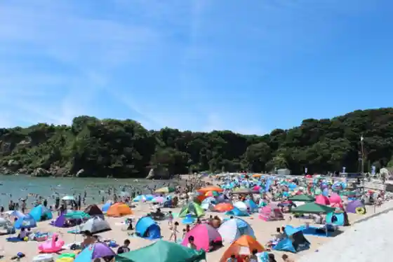
Nobiru Coast Beach Court
Beach sports court on the Nobiru shoreline
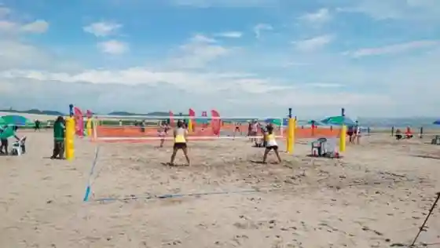
Reconstruction Memorial Park
Memorial park commemorating the 2011 disaster in Nobiru
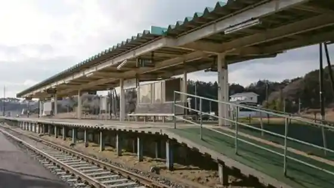
Aomina
Visitor facility on Miyato Island supporting local tourism
Oku-Matsushima Jomon Village Museum
Archaeology museum on Jomon heritage in Miyato Sato
Miyagi Olle Oku-Matsushima Course
Marked walking course through Oku-Matsushima scenery
Ignal Farm
Local farm experience site
Harappa
Community and produce space in Yamoto Kitaura
Oku-Matsushima Clubhouse
Clubhouse facility in Nobiru Kitayokei
Yamoto Seaside Green Space
Park-golf and green space in Omagari
Discovery Center
Hands-on discovery facility in Ono Kajizawa
Mimamori Hachimar Ranch
Ranch experience site in Otsuka